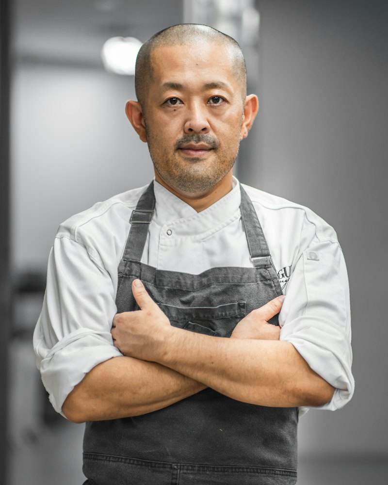

شام خصوصی
منوی اختصاصی در خانه شما برای مهمانیهای ۶ تا ۲۰ نفره.
درخواست

اولین درس آشپزی را در آشپزخانه مادربزرگم در تبریز گرفتم؛ جایی که بوی زعفران و دارچین همیشه در هوا بود. بعدها در مدرسه آشپزی Le Cordon Bleu درس خواندم و سالها در رستورانهای ستارهدار کار کردم.
امروز سرآشپز رستوران «سفره» هستم و باور دارم آشپزی ایرانی شایسته دیده شدن در بهترین میزهای دنیاست.
سال تجربه
کشور
جایزه
مهمان در سال
مواد اولیه تازه، هر روز از بازار محلی.

ماست چکیده، اسفناج تازه و گلمحمدی

فیله گوساله، کره زعفرانی، برنج دمپختک و گوجه کبابی

ماهی جنوب، سس نارنج و سبزی پلو

گوشت بره، گردو، رب انار و برنج ایرانی

کیک اسفنجی، خامه زعفرانی و توتفرنگی
نشاسته، آبلیمو تازه و بستنی سنتی
کباب برگ زعفرانی صدر، بهترین کبابی است که در ۱۵ سال نقد غذا خوردهام. ترکیبی از اصالت و خلاقیت.

شام خصوصی سالگرد ازدواجمان فراموشنشدنی شد. هر بشقاب یک اثر هنری بود.

مشاوره سرآشپز صدر منوی ما را متحول کرد و فروشمان در سه ماه ۴۰ درصد بالا رفت.

برای رزرو آخر هفته حداقل ۳ روز زودتر اقدام کنید.
رنگ و حالت نمایش را امتحان کنید.
رنگ اصلی حالت نمایش